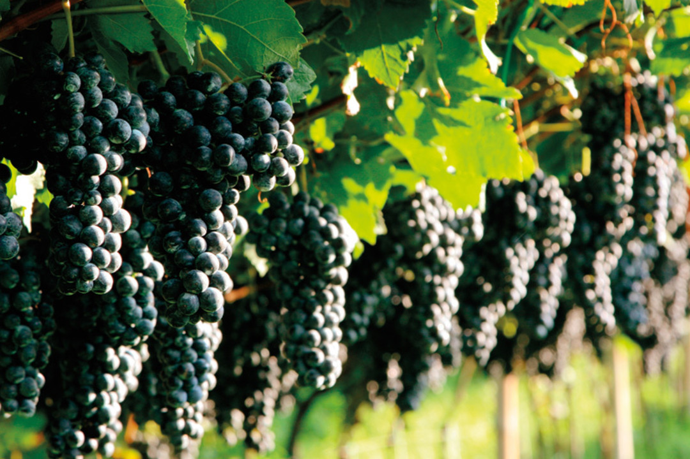
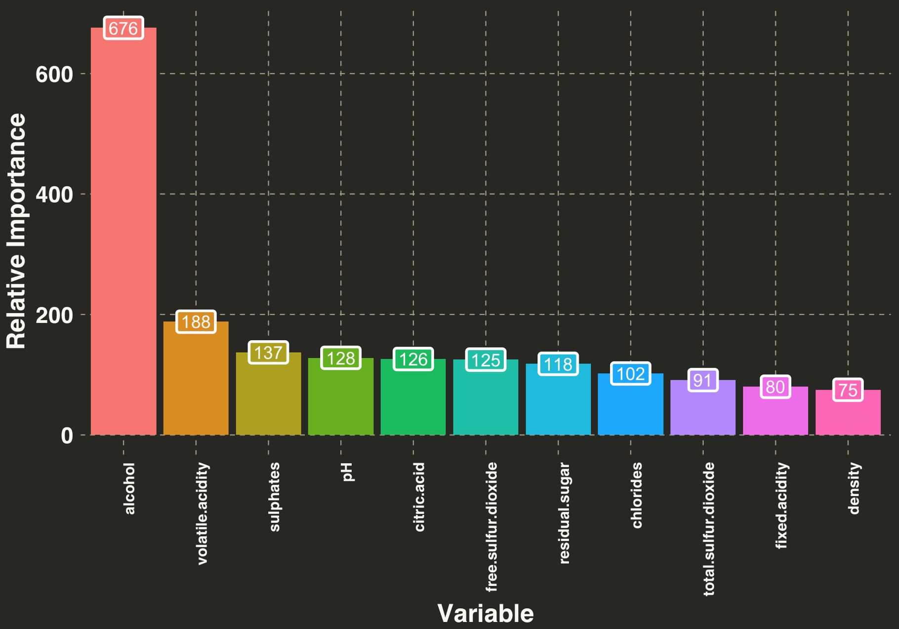
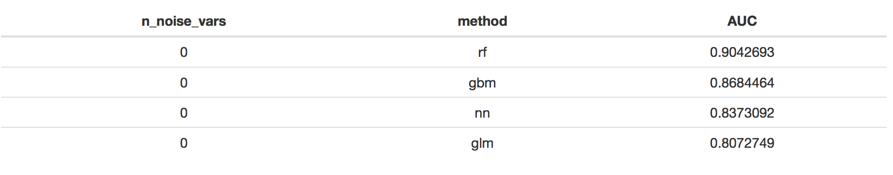
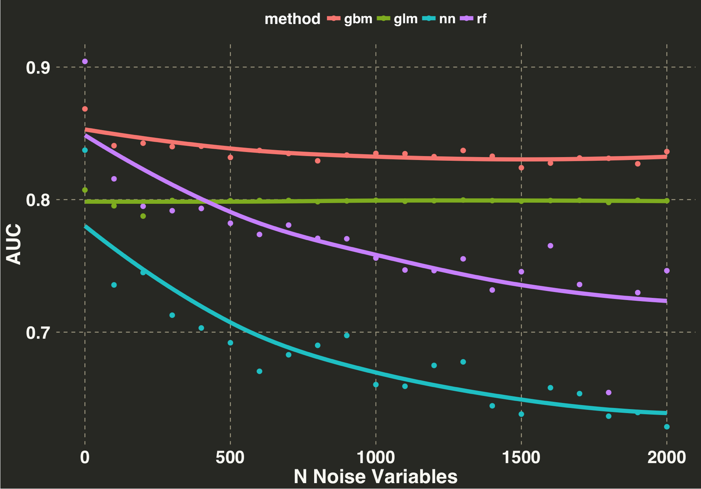
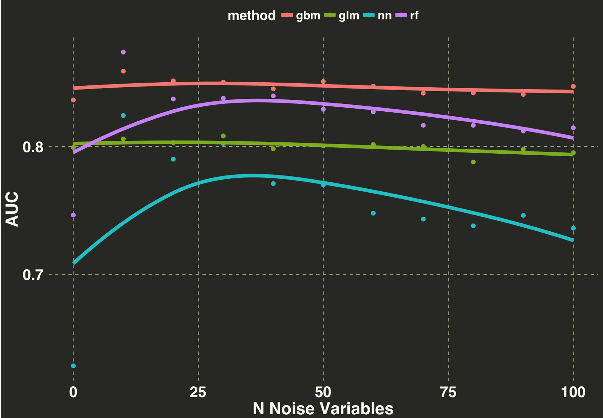

Feature selection is an integral part of machine learning, and this post explores what happens when lots of irrelevant features are added into the modeling process. We’ll also identify which algorithms are affected the most by such features. These questions will be addressed as we build a classifier and try to predict which wines we’ll like based on their chemical properties. So pour yourself a glass of Pinot Noir and fire up your R terminal!

These are main reasons for reducing the number of potential input features:
The focus here will primarly be on point 3, as we address two questions:
We’ll explore these questions with one my favorite datasets located here. Based on the methodology outlined here, a bunch of Wine experts got together and evaluated both White and Red wines. Each row represents the chemical properties of a wine in addition to a rating (0 = very bad, 10 = excellent). Each wine was rated by at least three people, and the median of their ratings was used as the final score. I have no idea how you get paid to drink wine, but somewhere in my life I chose the wrong career path. Thus the goal here is to predict the rating based on the chemical properties of the wine, such as its pH, Alcohol Concentration, or Total Sulfur Dioxide (whatever that means).
libs = c('forcats', 'dplyr', 'h2o', 'openair', 'ggplot2','knitr', 'artyfarty')
lapply(libs, require, character.only = TRUE)
# link: https://archive.ics.uci.edu/ml/machine-learning-databases/wine-quality/
working_directory = "/Users/mlebo1/Desktop/spost/feature_selection"
setwd(working_directory)
red_wine = read.csv('winequality-white.csv', sep = ";") %>%
dplyr::mutate(wine.type = "red")
white_wine = read.csv('winequality-red.csv', sep = ";") %>%
dplyr::mutate(wine.type = "white")
wine_df = red_wine %>%
dplyr::bind_rows(white_wine)
wine_df = wine_df[c(c(1:11, 13), 12)]
#
wine_df = wine_df %>%
dplyr::mutate(wine.class = ifelse(quality >= 7, "IdDrinkThat", "NoThanks")) %>%
dplyr::select(-quality) %>%
dplyr::mutate(wine.class = factor(wine.class))
This dataset is exceptionally clean. Typically we would do some exploratory analysis to check for outliers, missing values, incorrect codings, or any other number of problems that can sabotage our predictions. In this case we wont have do that and can get right into the variable selection.
We’ll initially leverage the gradient boosted machine (GBM) algorithm in the h2o library for variable selection. One of the nice features of GBM is that it automatically tells you which variables are important. Recall that GBM is an iterative algorithm that fits many simple decision trees, where the errors from the prior tree become the dependent variable for each subsequent tree. A feature’s importance is determined by how much its introduction into a given tree reduces the error. The total reduction in error for a given feature is then averaged across all of the trees the feature appeared in. Thus splitting on important variables should lead to larger reductions in error during training relative to less important variables.
With that in mind let’s do an initial pass and see which variables are important. We’ll do a 70⁄30 train/test split, start up h2o, and fit an initial model.
trainTestSplit = function(df, split_proportion){
set.seed(123)
out_list = list()
data_split = sample(1:2,
size = nrow(df),
prob = split_proportion,
replace = TRUE)
out_list$train = df[data_split == 1,]
out_list$test = df[data_split == 2,]
return(out_list)
}
split_proportion = c(0.7, 0.3)
df_split = trainTestSplit(wine_df, split_proportion)
Next we’ll gather our variable importance metric.
# nthreads = -1 means use all of the cores
h2o.init(nthreads = -1)
train_h2o = as.h2o(df_split$train)
test_h2o = as.h2o(df_split$test)
y_var = "wine.class"
x_var = setdiff(names(train_h2o),y_var)
gbm_fit = h2o.gbm(x = x_var,
y = y_var,
distribution = "bernoulli",
training_frame = train_h2o,
stopping_rounds = 3,
stopping_metric = "AUC")
And let’s plot our results based on the relative importance of each feature.
my_plot_theme = function(){
font_family = "Helvetica"
font_face = "bold"
return(theme(
axis.text.x = element_text(size = 18, face = font_face, family = font_family),
axis.text.y = element_text(size = 18, face = font_face, family = font_family),
axis.title.x = element_text(size = 20, face = font_face, family = font_family),
axis.title.y = element_text(size = 20, face = font_face, family = font_family),
strip.text.y = element_text(size = 18, face = font_face, family = font_family),
strip.text.x = element_text(size = 18, face = font_face, family = font_family),
plot.title = element_text(size = 18, face = font_face, family = font_family),
legend.position = "top",
legend.title = element_text(colour = "white", size = 16,
face = font_face,
family = font_family),
legend.text = element_text(colour = "white", size = 14,
face = font_face,
family = font_family)
))
}
data.frame(gbm_fit@model$variable_importances) %>%
dplyr::select(variable, relative_importance) %>%
dplyr::mutate(relative_importance = round(relative_importance),
variable = factor(variable)) %>%
dplyr::mutate(variable = fct_reorder(variable, relative_importance, .desc = TRUE)) %>%
ggplot(aes(x = variable, y = relative_importance,
fill = variable, label = as.character(relative_importance))) +
geom_bar(stat = "identity") +
geom_label(label.size = 1, size = 5, color = "white") +
theme_monokai_full() +
my_plot_theme() +
theme(legend.position = "none") +
ylab("Relative Importance") +
xlab("Variable") +
theme(axis.text.x = element_text(angle = 90, hjust = 1, size = 12))

It looks like all of the variables have a positive impact on our classification performance, so we’ll include all of them. Next we’re going to calculate AUC (Area Under Curve) for the following methods:
We’ll use this as a point of comparison as additional irrelevant predictor variables are added. Our goal is to see how the addition of such variables affects AUC on the test set. Let’s calculate our baseline numbers.
rf_fit = h2o.randomForest(x = x_var,
y = y_var,
training_frame = train_h2o,
stopping_rounds = 3,
stopping_metric = "AUC")
nn_fit = h2o.deeplearning(x = x_var,
y = y_var,
training_frame = train_h2o,
stopping_rounds = 3,
stopping_metric = "AUC")
glm_fit = h2o.glm(x = x_var,
y = y_var,
family = "binomial",
training_frame = train_h2o)
gbm_auc = h2o.auc(h2o.performance(gbm_fit, newdata = test_h2o))
rf_auc = h2o.auc(h2o.performance(rf_fit, newdata = test_h2o))
nn_auc = h2o.auc(h2o.performance(nn_fit, newdata = test_h2o))
glm_auc = h2o.auc(h2o.performance(glm_fit, newdata = test_h2o))
auc_df = data.frame(n_noise_vars = rep(0, 4),
method = c('gbm', 'rf', 'nn', 'glm'),
AUC = c(gbm_auc, rf_auc, nn_auc, glm_auc)) %>%
dplyr::arrange(desc(AUC))

This provides us with a general baseline. In the following section we’ll see what happens to the Area Under the Curve (AUC) as we add in lots of irrelevant predictors. But first let’s explore why we are using AUC as our evaluation metric.
Measuring model performance when your dependent variable is binary is more “involved”” than measuring performance with a continuous dependent variable. With a continuous DV, large residuals are worse than small residuals, and this can be quantified along a continuum. In contrast, you can have a classifier that’s extremely accurate – it provides the correct classification 99.99% of the time – but actually doesn’t tell you anything useful. This situation typically arises when you have imbalanced classes, such as trying to predict whether or not someone has a disease when it only occurs in 1 of 100,000 people. By chance alone the classifier would be right 99,999 times out of 100,000 if you just said “no one has the disease ever”.
Let’s consider the class balance in our wine dataset.
round(table(wine_df$wine.class)/nrow(wine_df) * 100, 1)
##
## IdDrinkThat NoThanks
## 19.7 80.3
According to our refined, discerning pallette, 80% of wines would fall by chance alone in the ‘NoThanks’ category. We could achieve 80% accuracy by simply assigning a label of ‘NoThanks’ to every new wine we encountered. This would obviously be a terrible idea, because then we’d never get to drink any wine! Thus, in cases where your classes are unevenly distributed, accuracy might not be the best evaluation metric.
AUC isn’t affected by class imbalances, because it considers both True Positives and False Positives. The True Positive Rate (TPR) captures all the instances in which our model said ‘Drink this wine’ and it was in fact a wine we would want to drink; False Positive Rate (FPR) captures instances in which our model said ‘Drink this Wine’ but it was actually a wine that we would not want to drink. As we have obtain more TPRs and fewer FPRs, our AUC will move closer to 1, which means our model is improving. Hopefully this clarifies the rationale for using AUC relative to accuracy. Now let’s get back to the original question.
Irrelevant predictors will be sampled from a normal distribution with a mean of 0 and a standard deviation of 1. Each iteration will add an additional 100 irrelevant predictors, and we’ll run a total of 20 iterations. All of the algorithms will use the default parameters that come with the h2o library.
n_noise_vars = seq(100, 2000, length.out = 20)
for(i in n_noise_vars){
print(i)
temp_noise_df_train = data.frame(placeholder = rep(NA, nrow(df_split$train)))
temp_noise_df_test = data.frame(placeholder = rep(NA, nrow(df_split$test)))
# add in i irrelevant predictors to train and test
for(j in 1:i){
temp_noise_df_train = cbind(temp_noise_df_train,
data.frame(noise.var = rnorm(nrow(df_split$train),
0,
1)))
temp_noise_df_test = cbind(temp_noise_df_test,
data.frame(noise.var = rnorm(nrow(df_split$test),
0,
1)))
}
# format names of irrelevant variables
temp_noise_df_train = temp_noise_df_train[,2:dim(temp_noise_df_train)[2]]
names(temp_noise_df_train) = gsub("\\.", "", names(temp_noise_df_train))
temp_noise_df_train = as.h2o(cbind(temp_noise_df_train,
df_split$train))
temp_noise_df_test = temp_noise_df_test[,2:dim(temp_noise_df_test)[2]]
names(temp_noise_df_test) = gsub("\\.", "", names(temp_noise_df_test))
temp_noise_df_test = cbind(temp_noise_df_test,
df_split$test)
x_var = setdiff(names(temp_noise_df_train),y_var)
gbm_fit = h2o.gbm(x = x_var,
y = y_var,
distribution = "bernoulli",
training_frame = temp_noise_df_train,
stopping_rounds = 3,
stopping_metric = "AUC")
rf_fit = h2o.randomForest(x = x_var,
y = y_var,
training_frame = temp_noise_df_train,
stopping_rounds = 3,
stopping_metric = "AUC")
nn_fit = h2o.deeplearning(x = x_var,
y = y_var,
training_frame = temp_noise_df_train,
stopping_rounds = 3,
stopping_metric = "AUC")
glm_fit = h2o.glm(x = x_var,
y = y_var,
family = "binomial",
training_frame = temp_noise_df_train)
temp_noise_df_test = as.h2o(temp_noise_df_test)
gbm_auc = h2o.auc(h2o.performance(gbm_fit, newdata = temp_noise_df_test))
rf_auc = h2o.auc(h2o.performance(rf_fit, newdata = temp_noise_df_test))
nn_auc = h2o.auc(h2o.performance(nn_fit, newdata = temp_noise_df_test))
glm_auc = h2o.auc(h2o.performance(glm_fit, newdata = temp_noise_df_test))
auc_df = rbind(auc_df,
data.frame(n_noise_vars = i,
method = c('gbm', 'rf', 'nn', 'glm'),
AUC = c(gbm_auc, rf_auc, nn_auc, glm_auc)))
}
And now let’s plot the results.
ggplot(auc_df, aes(x = n_noise_vars, y = AUC,
color = method)) +
geom_point(size = 2) +
stat_smooth(span = 1.75,
se = FALSE,
size = 2) +
theme_monokai_full() +
my_plot_theme() +
ylab("AUC") +
xlab("N Noise Variables")

A few initial observations:
Although we can’t generalize these outcomes to every situation, they do align with my experience. In fact, one of the reasons I like GBM is that it tends to ignore irrelevant predictors during modeling. Neural networks are extremely powerful and with the right tuning/regularization will often outperform any of the methods outlined here. However, they are susceptible to overfitting because of their flexibility, which leads to noise being leveraged as signal during the model building process.
OK so classification performance goes down when you add in a lots of irrelevant predictors. But what happens if there are only a few? Let’s re-run the above situation, but instead limit the number of irrelevant predictors to a range of 10 - 100 instead of 100 - 2000. We can replace this line and re-run.
auc_df = data.frame(n_noise_vars = rep(0, 4),
method = c('gbm', 'rf', 'nn', 'glm'),
AUC = c(gbm_auc, rf_auc, nn_auc, glm_auc)) %>%
dplyr::arrange(desc(AUC))
# change number of irrelevant predictors here
n_noise_vars = seq(10, 100, length.out = 10)
for(i in n_noise_vars){
print(i)
temp_noise_df_train = data.frame(placeholder = rep(NA, nrow(df_split$train)))
temp_noise_df_test = data.frame(placeholder = rep(NA, nrow(df_split$test)))
for(j in 1:i){
temp_noise_df_train = cbind(temp_noise_df_train,
data.frame(noise.var = rnorm(nrow(df_split$train),
0,
1)))
temp_noise_df_test = cbind(temp_noise_df_test,
data.frame(noise.var = rnorm(nrow(df_split$test),
0,
1)))
}
temp_noise_df_train = temp_noise_df_train[,2:dim(temp_noise_df_train)[2]]
names(temp_noise_df_train) = gsub("\\.", "", names(temp_noise_df_train))
head(temp_noise_df_train)
temp_noise_df_train = as.h2o(cbind(temp_noise_df_train,
df_split$train))
#
temp_noise_df_test = temp_noise_df_test[,2:dim(temp_noise_df_test)[2]]
names(temp_noise_df_test) = gsub("\\.", "", names(temp_noise_df_test))
temp_noise_df_test = cbind(temp_noise_df_test,
df_split$test)
x_var = setdiff(names(temp_noise_df_train),y_var)
gbm_fit = h2o.gbm(x = x_var,
y = y_var,
distribution = "bernoulli",
training_frame = temp_noise_df_train,
stopping_rounds = 3,
stopping_metric = "AUC")
rf_fit = h2o.randomForest(x = x_var,
y = y_var,
training_frame = temp_noise_df_train,
stopping_rounds = 3,
stopping_metric = "AUC")
nn_fit = h2o.deeplearning(x = x_var,
y = y_var,
training_frame = temp_noise_df_train,
stopping_rounds = 3,
stopping_metric = "AUC")
glm_fit = h2o.glm(x = x_var,
y = y_var,
family = "binomial",
training_frame = temp_noise_df_train)
temp_noise_df_test = as.h2o(temp_noise_df_test)
#
gbm_auc = h2o.auc(h2o.performance(gbm_fit, newdata = temp_noise_df_test))
rf_auc = h2o.auc(h2o.performance(rf_fit, newdata = temp_noise_df_test))
nn_auc = h2o.auc(h2o.performance(nn_fit, newdata = temp_noise_df_test))
glm_auc = h2o.auc(h2o.performance(glm_fit, newdata = temp_noise_df_test))
auc_df = rbind(auc_df,
data.frame(n_noise_vars = i,
method = c('gbm', 'rf', 'nn', 'glm'),
AUC = c(gbm_auc, rf_auc, nn_auc, glm_auc)))
}
ggplot(auc_df, aes(x = n_noise_vars, y = AUC,
color = method)) +
geom_point(size = 2) +
stat_smooth(span = 1.75,
se = FALSE,
size = 2) +
theme_monokai_full() +
my_plot_theme() +
ylab("AUC") +
xlab("N Noise Variables")

So a few irrelevant features (i.e., 10 - 100) has a neglible impact on modeling performance, at least with the current use case. This goes to show that pre-processing and feature selection is an important part of the model building process if you are dealing with lots of potential features. Beyond reducing the training time, pruning irrelevant features can vastly improve model performance. As illustrated above, including irrelevant features can wreak havoc on your model when using methods with lots of flexible parameters. It would be interesting to see how these results change if we added in some regularization measures to protect against overfitting. For example, one way to reduce overfitting with Random Forest is to limit the maximum depth of a tree (i.e., each tree can only have a single split instead of multiple splits). Or for Neural Networks L2 regularization can be used, which discourages weight vectors in the network from becoming too large. If you try any of these approaches, I’d love to hear how it goes!
comments powered by Disqus